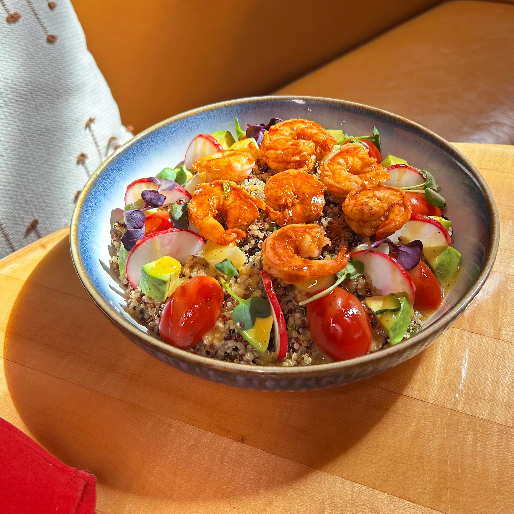
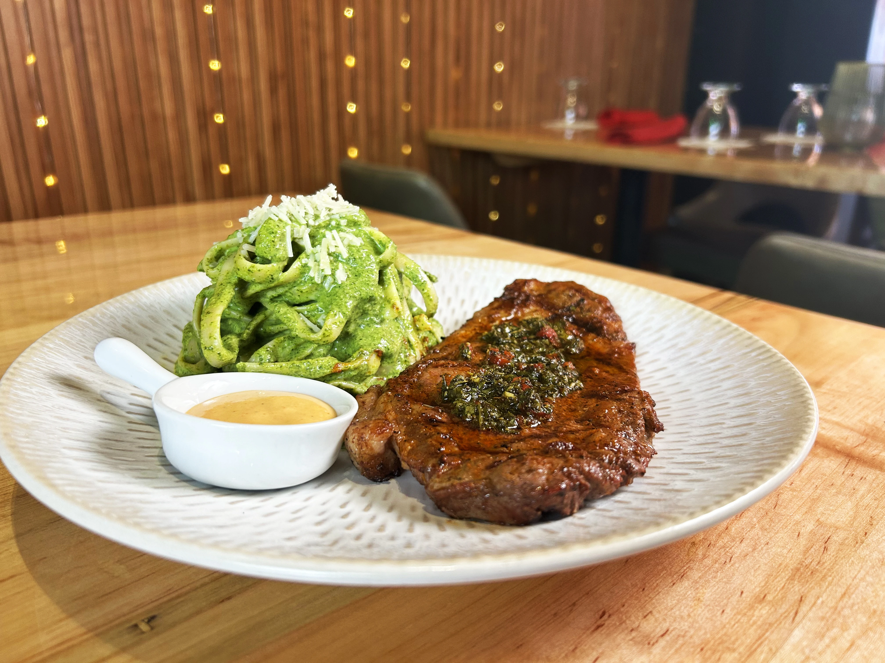
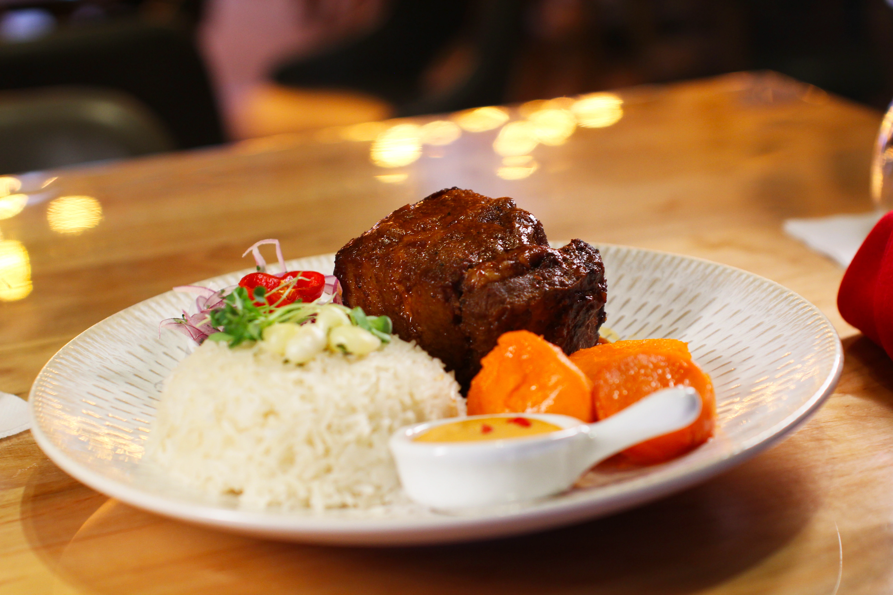
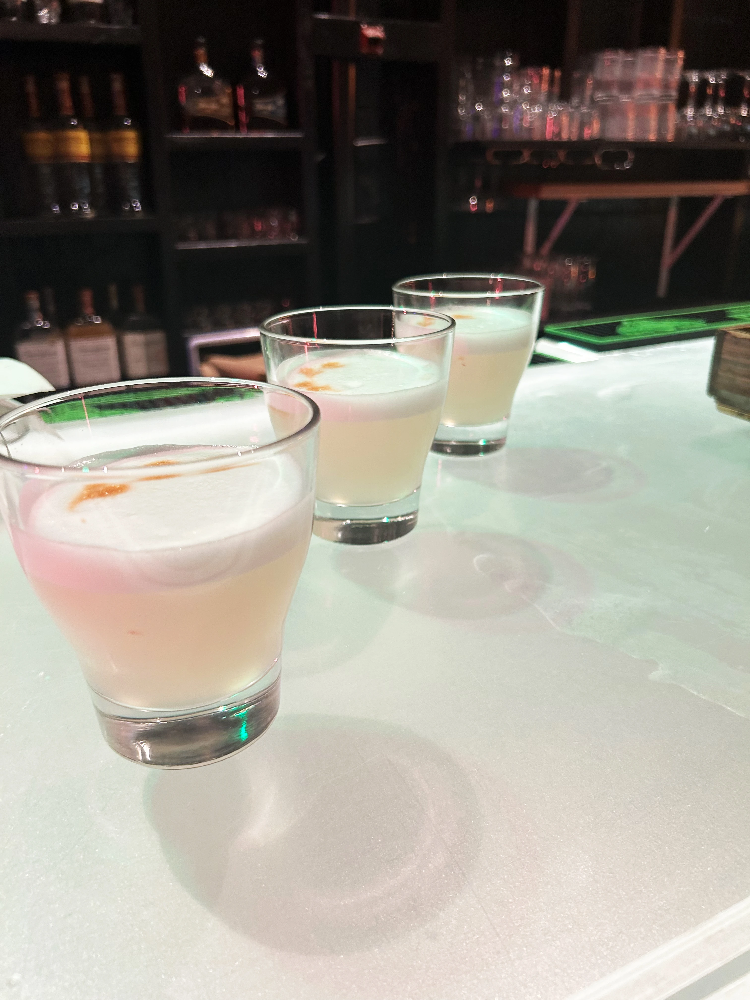
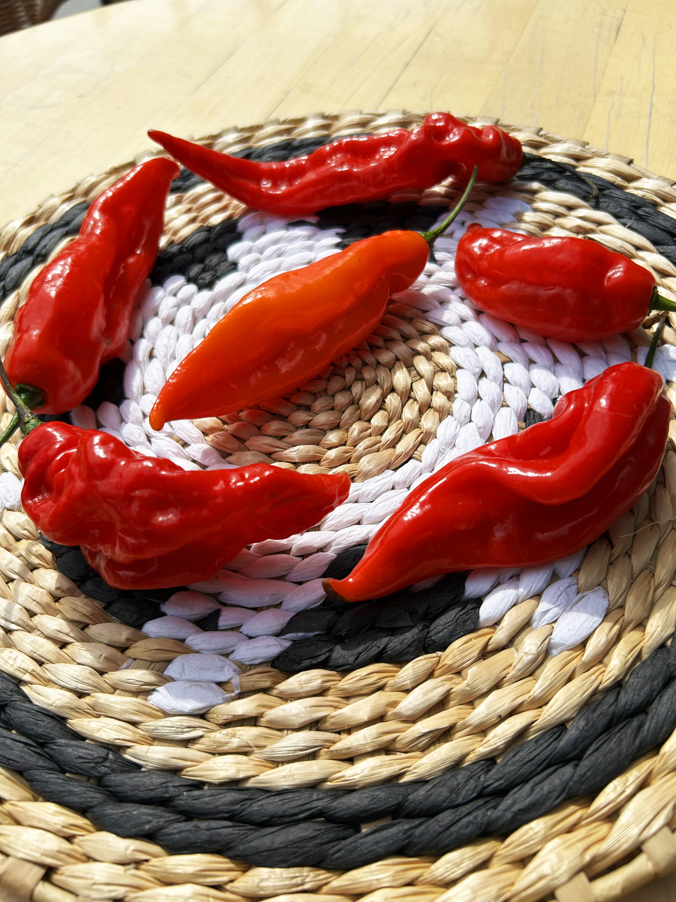
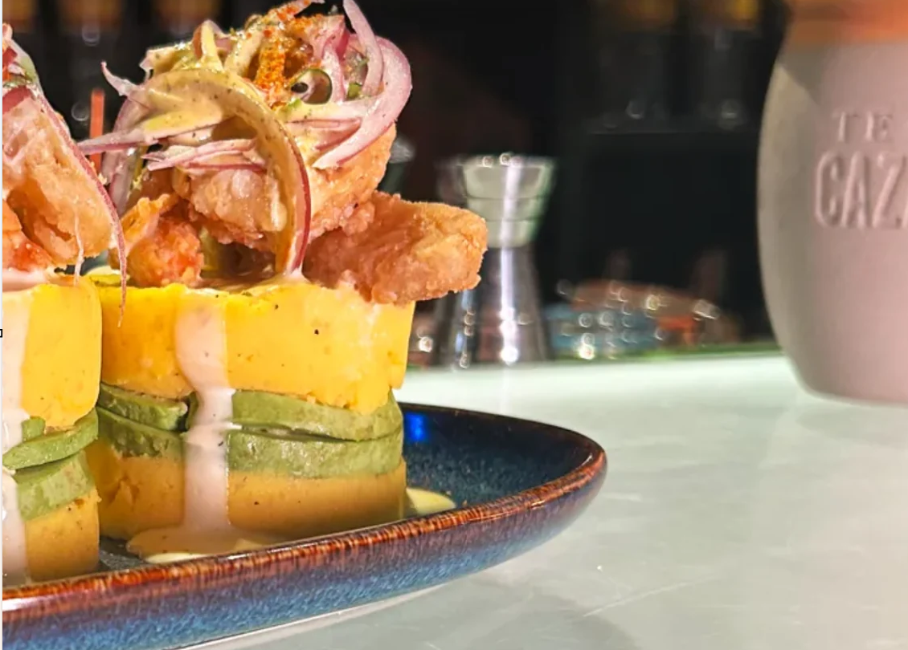

Fusion of Flavours that Fills the Heart
SUMAQ means beautiful, good, and delicious in Quechua—a word reserved for things of true quality, for moments that linger and quietly touch the soul.
This is what we strive to offer: a fusion of flavours shaped by care and intention, meant not only to be tasted, but deeply felt.

A cuisine delicately crafted with passion.

We invite you to slow down, gather, and experience the heart of Peruvian cuisine. Inspired by the love of our grandmothers’ recipes, reimagined with a contemporary touch while preserving their timeless essence.
Vibrant ingredients brought from our beloved Peru bring colour to each plate, reflecting the richness and diversity of our culture.


Soft aromas of ají peppers and fresh herbs awaken our most cherished memories.
Flavours come into perfect balance, telling our story with every bite and filling the heart long after the table is cleared.
